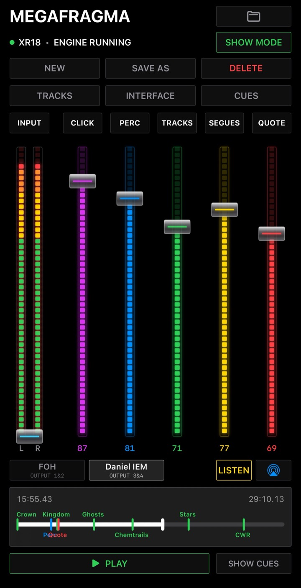
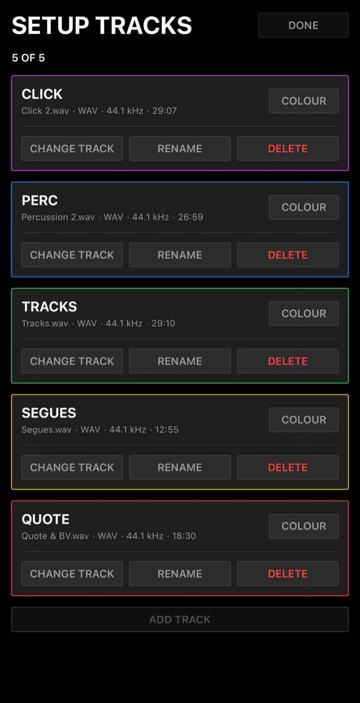
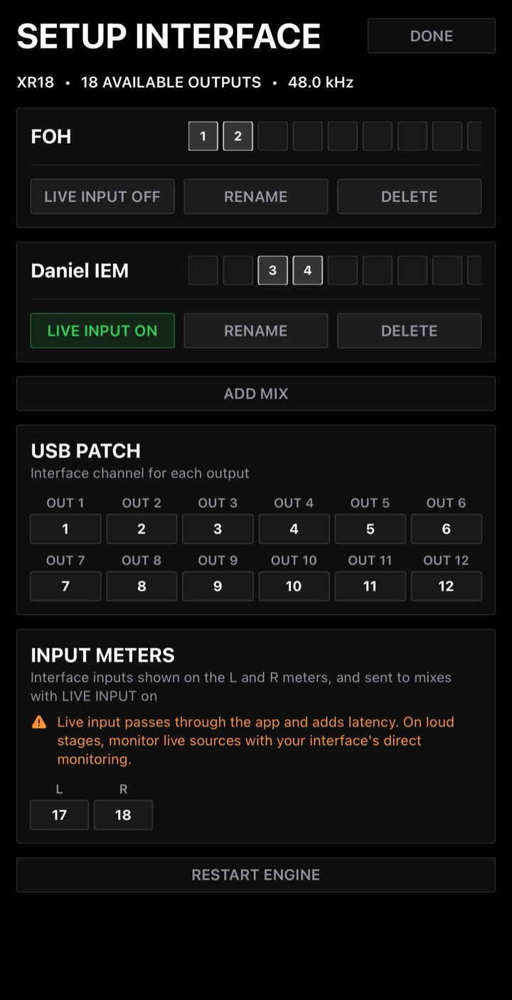
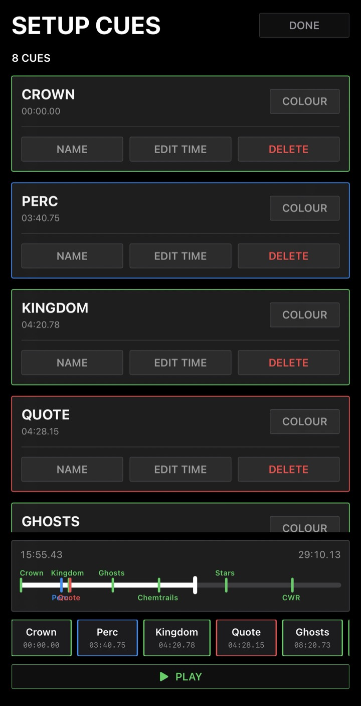

Track Mixer
Backing tracks, in sync, with a different mix in every ear. Load your stems, build a mix for the band's in-ears and another for front of house, then run the show from one screen.
Screens
Works in portrait and landscape.




Features
Five tracks in sync
Load up to five audio files per show (click, guide, stems) from Files. They play locked together, and stay locked through an interface reconnect.
A mix for every output
Create as many mixes as you need (IEM, FOH, drummer) and send each to its own interface outputs. Every mix keeps its own fader levels.
Listen
Hear any one mix on its own through outputs 1/2 while you prep, then switch mixes to hear each in turn. Turn it off for normal routing.
Cues on the timeline
Mark the intro, verse and chorus with coloured cues. Set times to the hundredth of a second and tap a cue to jump straight to it.
USB patch
Map Track Mixer's outputs 1–12 to any channels on your interface, such as 37–48 on a 48-channel console. Each show remembers its own patch.
Input meters
Choose which interface inputs appear on the L and R meters, so you can watch the desk's return or a talkback mic. Saved per show.
Live input
Send those inputs into any mix, such as a vocal mic or talkback in the band's in-ears, with its own level per mix. Live input only passes through your USB interface, so the phone's own mic is never used.
Show library
Keep a show for every gig or set. New, Save As, Rename and Delete, and the last show reopens when you launch.
Show Mode
One button runs your own Shortcuts, for example to turn on a Focus, lock brightness and silence notifications before you go on.
Stage-ready
A black, high-contrast interface with clear connection and engine status. If the interface drops out, Track Mixer waits for it and picks up again.
What you need
| Device | iPhone or iPad with iOS / iPadOS 26.5 or later |
|---|---|
| Interface | A class-compliant USB audio interface or digital console. Two outputs is enough for one stereo mix. Use more outputs for more mixes, up to 12. |
| Audio | Your tracks as audio files in the Files app (for example WAV, AIFF, M4A, MP3). Use the same sample rate for every track in a show. |